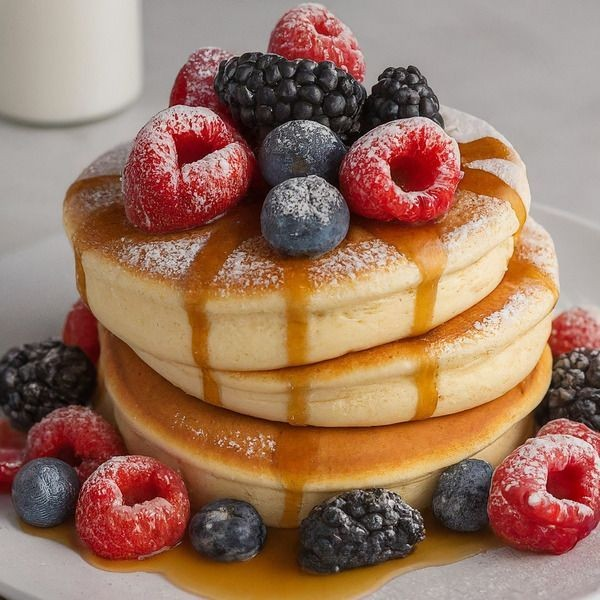

Fluffy Pancakes

Ingredients
- 1½ cups all-purpose flour
- 3½ tsp baking powder
- 1 tbsp sugar
- ¼ tsp salt
- 1¼ cups milk
- 1 egg
- 3 tbsp melted butter (plus more for cooking)
- Optional: 1 tsp vanilla extract
Instructions
- In a bowl, sift together flour, baking powder, sugar, and salt.
- Make a well in the center and pour in the milk, egg, and melted butter. Mix until smooth.
- Heat a non-stick pan or griddle over medium heat. Lightly butter it.
- Pour ¼ cup batter for each pancake onto the pan.
- Cook until bubbles form on the surface and edges look set (about 2–3 minutes).
- Flip and cook the other side until golden brown (1–2 minutes).
- Serve warm with butter, maple syrup, berries, or chocolate drizzle!
← Back to Home